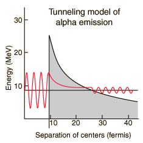

|  |
The illustration represents an attempt to model the alpha decay characteristics of polonium-212, which emits an 8.78 MeV alpha particle with a half-life of 0.3 microseconds. The Coulomb barrier faced by an alpha particle with this energy is about 26 MeV, so by classical physics it cannot escape at all. Quantum mechanical tunneling gives a small probability that the alpha can penetrate the barrier. To evaluate this probability, the alpha particle inside the nucleus is represented by a free-particle wavefunction subject to the nuclear potential. Inside the barrier, the solution to the Schrodinger equation becomes a decaying exponential. Calculating the ratio of the wavefunction outside the barrier and inside and squaring that ratio gives the probability of alpha emission.
|